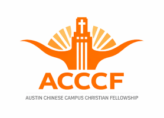

奧斯汀華人教會華語堂團契及家庭小組
奧斯汀華人教會現有許多個華語團契，也有好幾個家庭小組。團契及小組的主要目的是在主裡相互關愛，彼此連接，使每個肢體在主的話語上得以建造， 一同興旺主的福音，以團契、小組的增長帶動教會的增長。
請按團契的圖像獲得更多的資訊！！

ACCCF 學生團契
奧斯汀華人校園基督徒團契（ACCCF）是由奧斯汀華人教會（ACC）支持的校園團契，同時也是在德州大學奧斯汀分校（UT Austin）正式登記的學生組織。
每周五晚上6pm 在UT Student Services Building (SSB)G1.310(Glenn Maloney Room)聚會。
UTAF 德州大學公寓團契
歡迎你來到UTAF德州大學公寓團契。我們是一個以耶穌基督為中心, 以UT研究生，博後，訪問學者家庭為主要組成的華人信仰社團。
每週五晚上6-9pm 在Far West 地區的Northwest Community Church聚會
LLF 小靈羊職青團契
小靈羊團契是針對在職青年的華人基督團契。在這裡，我們分享主愛，彼此關愛，在主裡一起成長。我們歡迎所有在職的年輕基督徒及慕道友參加我們的活動。
團契聚會時間：每週五晚上7:30PM 在教會的明道樓